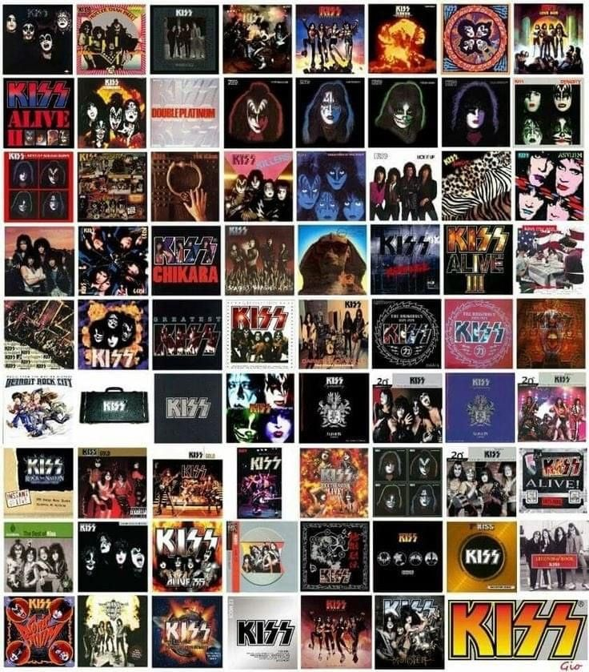

Sobre a discografia
A discografia do KISS reúne mais de 20 álbuns de estúdio, além de discos ao vivo, coletâneas e outros lançamentos. A banda lançou seu primeiro álbum, KISS, em 1974, iniciando uma carreira marcada pelo hard rock e por apresentações grandiosas.
Entre os álbuns mais conhecidos estão Destroyer (1976), Rock and Roll Over (1976), Love Gun (1977) e Creatures of the Night (1982). Ao longo dos anos, o KISS passou por diferentes fases e formações, explorando diferentes sonoridades sem perder sua identidade.
Um dos grandes destaques da discografia é Alive! (1975), um álbum ao vivo que ajudou a aumentar ainda mais a popularidade da banda.
🎤 Músicas famosas
O KISS possui várias músicas que se tornaram clássicos do rock e ajudaram a marcar a carreira da banda. Algumas das mais famosas são:
- Rock and Roll All Nite
- Detroit Rock City
- I Was Made for Lovin' You
- Beth
- Shout It Out Loud
- Heaven's on Fire
- Love Gun
- Lick It Up